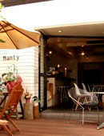
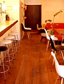
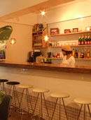

';
$header_obj->fncMenuHead_h1text = '日本ワーキング・ホリデー協会福岡オフィス＆カフェ”マンリー”へのアクセス';
$header_obj->display_header();
include('../../calendar_module/mod_event_horizontal.php');
?>
';
$header_obj->fncMenuHead_h1text = '日本ワーキング・ホリデー協会福岡オフィス＆カフェ”マンリー”へのアクセス';
$header_obj->display_header();
include('../../calendar_module/mod_event_horizontal.php');
?>
福岡オフィス＆カフェ”マンリー”へのアクセス
福岡オフィス＆カフェ”マンリー”
| 福岡会場住所 |
福岡セミナーは：福岡オフィス＆カフェ”マンリー”にて開催されます。 福岡県福岡市中央区今泉1‐18‐55 |
|---|---|
| セミナー会場地図  |
大きな地図で見る |
| 最寄り駅とアクセス方法 |
西鉄福岡天神駅から徒歩６分｜今泉福岡駅南口から徒歩5分｜今泉「TSUTAYA」から徒歩1分 薬院駅から368m 【福岡100円バスを利用する】 福岡博多駅から徒歩→「西鉄博多駅バスセンター」へ→福岡100円バスで→西鉄福岡天神駅まで→徒歩で福岡オフィスへ。 |
| 福岡連絡先 | TEL：03-6304-5858 （福岡セミナーのご予約は東京オフィスにて受け付けいたします） 【お願い】 福岡オフィス＆カフェマンリーは、通常はカフェ・レストランとして営業しておりますので留学・ワーキングホリデーに関するお問い合わせは毎週行われる福岡セミナーに参加していただくか、 メールで福岡オフィス ( sodan-fukuoka@jawhm.or.jp )までお願いいたします。（メンバー様優先） |
| 営業時間 |
Cafe★12:00～翌00:00｜Lunch★12:00～17:00｜Dinner★18:00～翌1:00 定休日：不定休 ※ご注意 個別でのカウンセリングをご希望の場合は、事前に福岡オフィス( sodan-fukuoka@jawhm.or.jp )までご予約をお願い致します。 |
| 福岡オフィスの雰囲気 |
日本ワーキングホリデー協会では、より多くの方の留学・ワーキングホリデーに関するご相談をお受けする為、各地にワーホリ相談オフィスを構えております。 その中でも、とても開放的で様々な相談ができるのがワーキングホリデー協会福岡オフィスです。 通常は福岡の人気カフェ・レストランとして営業している、その名も「Manly（マンリー）」。 「カフェでワーキングホリデー相談ができたらなあ？」お客様のこんな一言からワーキングホリデー福岡オフィス&カフェ マンリーは誕生しました。 ワーホリ相談としても、カフェとしても福岡で本格的な情報とサービスを提供いたします。 |
| スケジュール | 福岡ワーホリセミナーは、福岡県にお住まいの方はもちろん、佐賀県、長崎府、熊本県、大分県、宮崎県、鹿児島県から お越しのお客さんにも参加していただいております。 現在福岡ワーホリセミナーは、週に数回のペースで行われておりますがより多くの方にワーキングホリデーを知っていただくため、 今後福岡ワーホリセミナーの回数を増やしていく予定です。 |
| 福岡セミナーの雰囲気  |
福岡ワーホリセミナーは、シドニーのビーチ沿いにあるような全面ガラス張りの可愛くて開放的なカフェ空間を利用して開催されます。
オフィス内とは違いオープンな環境を作り上げ、アットホームなカフェ店内でしっかり学ぶことができます。 「もっとたくさんの若者にワーキングホリデーを知ってもらいたい！」 福岡オフィスではワーキングホリデー初心者セミナーを中心に開催しております。 福岡でワーキングホリデーの認知度を上げること、正しいワーホリビザ情報を提供すること、そして「充実した内容」の ワーホリセミナーをお届けします。 福岡オフィス&カフェマンリーで働くスタッフはもちろんワーホリ経験者です。ワーキングホリデーにこれから出発する方だけでなく、 ワーホリから福岡に戻ってきた方もマンリーで語り合いましょう！ |
| 福岡スタッフから  |
【マンリーのシェフ「ジン君」からメッセージ】 ここ福岡で働く前は、シドニーでシェフとして働いていました。 ちなみに僕は当時住んでいた東京オフィスからワーホリでシドニーで行きました。東京で受けるようなワーホリセミナーがここ福岡で参加できます！ シドニーでは福岡からきたワーホリさんに数人会いましたが、他県に比べて少ないです！ 「もっと福岡からワーキングホリデー情報を発信していきたい！」といつもマンリーのキッチンで考えています。 福岡に来た時は、必ずワーキングホリデー福岡オフィス&カフェ マンリーに立ち寄ってください。キッチンにも声掛けてね。 |